Experiment result
Critical difference
Micro-benchmark Critical difference

| Fuzzer | Rank |
|---|
| honggfuzz | 2.20 |
| aflplusplus | 2.32 |
| afl | 2.61 |
| entropic | 2.61 |
| eclipser | 2.69 |
| libfuzzer | 2.81 |
Overall (ranking by edges covered)
- honggfuzz (227,826 edges covered), success rate: 40.79%(421/1032 pairs)
- aflplusplus (223,819 edges covered), success rate: 41.18%(425/1032 pairs)
- afl (216,468 edges covered), success rate: 40.21%(415/1032 pairs)
- eclipser (214,384 edges covered), success rate: 40.21%(415/1032 pairs)
- entropic (209,537 edges covered), success rate: 40.02%(413/1032 pairs)
- libfuzzer (203,379 edges covered), success rate: 37.60%(388/1032 pairs)
 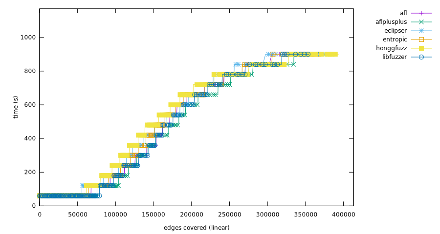
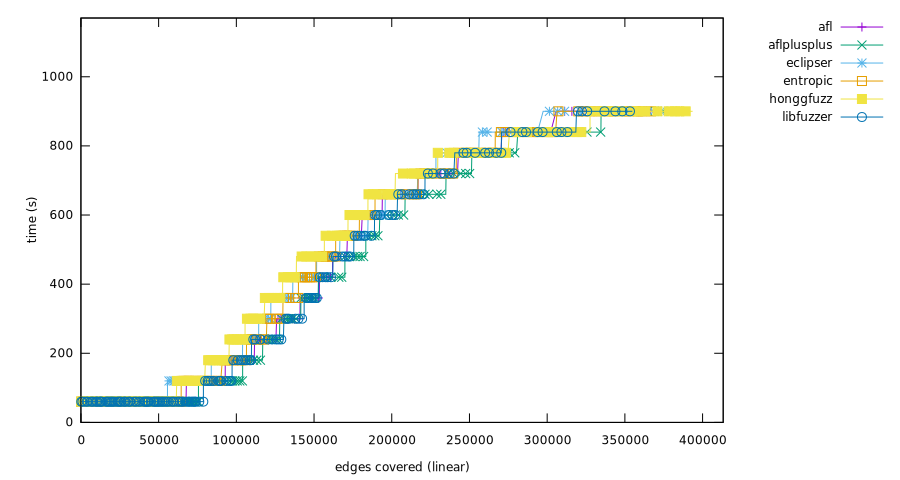
bloaty_fuzz_target
Ranking
- afl, (10,104 edges covered), success rate: 9.80%(5/51 pairs)
- eclipser, (9,855 edges covered), success rate: 13.73%(7/51 pairs)
- honggfuzz, (9,534 edges covered), success rate: 15.69%(8/51 pairs)
- entropic, (7,743 edges covered), success rate: 9.80%(5/51 pairs)
- aflplusplus, (7,625 edges covered), success rate: 7.84%(4/51 pairs)
- libfuzzer, (7,124 edges covered), success rate: 9.80%(5/51 pairs)
 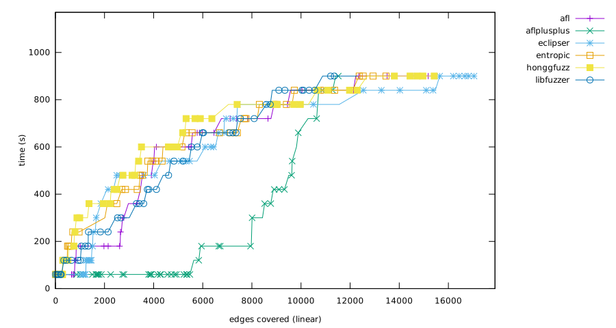
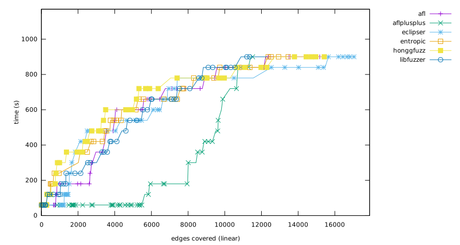
Mann-Whitney U test

curl_curl_fuzzer_http
Ranking
- aflplusplus, (16,635 edges covered), success rate: 18.00%(9/50 pairs)
- honggfuzz, (15,045 edges covered), success rate: 16.00%(8/50 pairs)
- afl, (14,108 edges covered), success rate: 10.00%(5/50 pairs)
- entropic, (13,853 edges covered), success rate: 16.00%(8/50 pairs)
- eclipser, (13,660 edges covered), success rate: 8.00%(4/50 pairs)
- libfuzzer, (13,210 edges covered), success rate: 6.00%(3/50 pairs)
 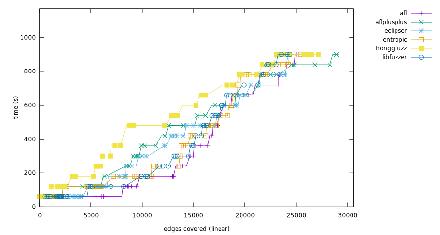
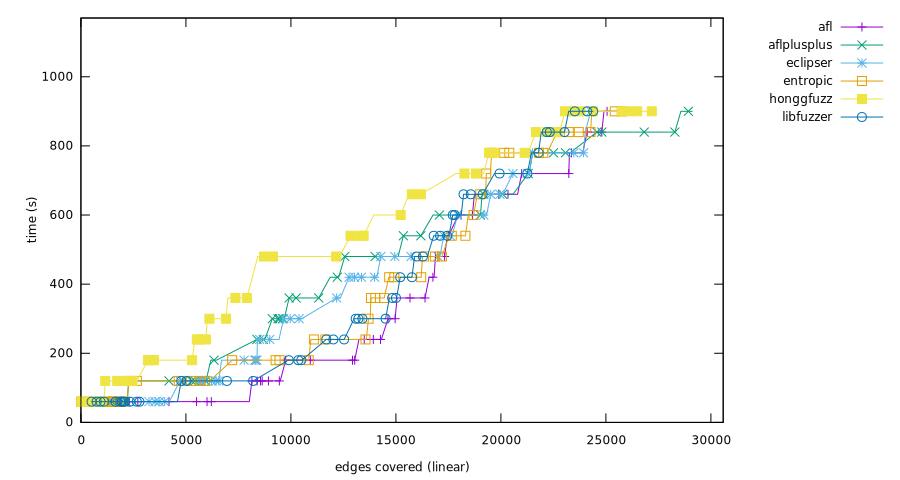
Mann-Whitney U test

freetype2-2017
Ranking
- honggfuzz, (18,190 edges covered), success rate: 20.37%(11/54 pairs)
- aflplusplus, (14,605 edges covered), success rate: 12.96%(7/54 pairs)
- afl, (13,561 edges covered), success rate: 12.96%(7/54 pairs)
- eclipser, (13,544 edges covered), success rate: 18.52%(10/54 pairs)
- entropic, (10,756 edges covered), success rate: 12.96%(7/54 pairs)
- libfuzzer, (10,237 edges covered), success rate: 12.96%(7/54 pairs)
 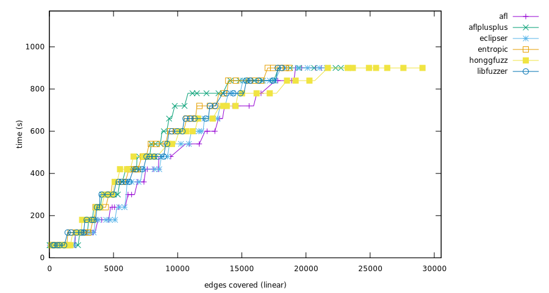
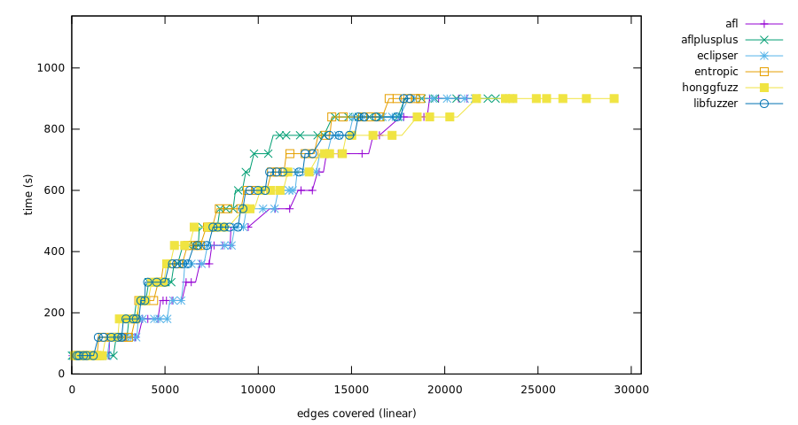
Mann-Whitney U test
harfbuzz-1.3.2
Ranking
- honggfuzz, (10,406 edges covered), success rate: 23.40%(11/47 pairs)
- aflplusplus, (10,293 edges covered), success rate: 23.40%(11/47 pairs)
- afl, (8,441 edges covered), success rate: 29.79%(14/47 pairs)
- eclipser, (8,391 edges covered), success rate: 29.79%(14/47 pairs)
- entropic, (7,670 edges covered), success rate: 25.53%(12/47 pairs)
- libfuzzer, (7,583 edges covered), success rate: 25.53%(12/47 pairs)


Mann-Whitney U test

jsoncpp_jsoncpp_fuzzer
Ranking
- honggfuzz, (2,201 edges covered), success rate: 100.00%(54/54 pairs)
- eclipser, (2,201 edges covered), success rate: 100.00%(54/54 pairs)
- entropic, (2,201 edges covered), success rate: 100.00%(54/54 pairs)
- afl, (2,201 edges covered), success rate: 100.00%(54/54 pairs)
- libfuzzer, (2,199 edges covered), success rate: 98.15%(53/54 pairs)
- aflplusplus, (2,185 edges covered), success rate: 92.59%(50/54 pairs)
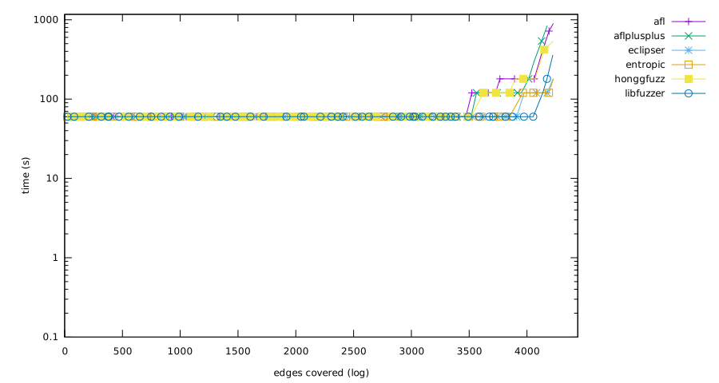 
Mann-Whitney U test

lcms-2017-03-21
Ranking
- aflplusplus, (5,833 edges covered), success rate: 27.59%(16/58 pairs)
- honggfuzz, (5,273 edges covered), success rate: 36.21%(21/58 pairs)
- eclipser, (4,508 edges covered), success rate: 34.48%(20/58 pairs)
- afl, (4,327 edges covered), success rate: 36.21%(21/58 pairs)
- entropic, (4,252 edges covered), success rate: 29.31%(17/58 pairs)
- libfuzzer, (3,755 edges covered), success rate: 27.59%(16/58 pairs)


Mann-Whitney U test

libjpeg-turbo-07-2017
Ranking
- aflplusplus, (6,208 edges covered), success rate: 55.56%(30/54 pairs)
- afl, (5,439 edges covered), success rate: 51.85%(28/54 pairs)
- honggfuzz, (5,393 edges covered), success rate: 33.33%(18/54 pairs)
- eclipser, (5,343 edges covered), success rate: 50.00%(27/54 pairs)
- entropic, (4,981 edges covered), success rate: 37.04%(20/54 pairs)
- libfuzzer, (3,733 edges covered), success rate: 25.93%(14/54 pairs)


Mann-Whitney U test
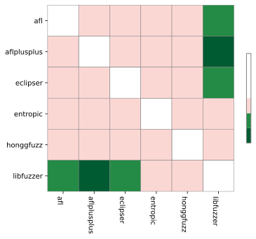
libpcap_fuzz_both
Ranking
- aflplusplus, (12,249 edges covered), success rate: 43.40%(23/53 pairs)
- libfuzzer, (10,455 edges covered), success rate: 37.74%(20/53 pairs)
- honggfuzz, (9,892 edges covered), success rate: 32.08%(17/53 pairs)
- afl, (9,742 edges covered), success rate: 35.85%(19/53 pairs)
- entropic, (9,690 edges covered), success rate: 32.08%(17/53 pairs)
- eclipser, (8,689 edges covered), success rate: 37.74%(20/53 pairs)
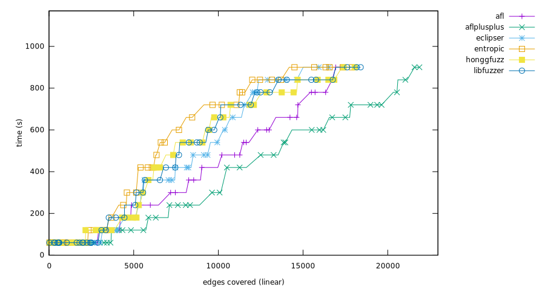
Mann-Whitney U test
libpng-1.2.56
Ranking
- aflplusplus, (4,105 edges covered), success rate: 71.93%(41/57 pairs)
- honggfuzz, (3,655 edges covered), success rate: 66.67%(38/57 pairs)
- entropic, (3,457 edges covered), success rate: 57.89%(33/57 pairs)
- libfuzzer, (3,318 edges covered), success rate: 45.61%(26/57 pairs)
- eclipser, (3,269 edges covered), success rate: 59.65%(34/57 pairs)
- afl, (3,144 edges covered), success rate: 61.40%(35/57 pairs)


Mann-Whitney U test
libxml2-v2.9.2
Ranking
- honggfuzz, (16,371 edges covered), success rate: 58.00%(29/50 pairs)
- eclipser, (15,144 edges covered), success rate: 46.00%(23/50 pairs)
- aflplusplus, (14,863 edges covered), success rate: 44.00%(22/50 pairs)
- afl, (14,587 edges covered), success rate: 38.00%(19/50 pairs)
- entropic, (14,324 edges covered), success rate: 40.00%(20/50 pairs)
- libfuzzer, (13,808 edges covered), success rate: 34.00%(17/50 pairs)


Mann-Whitney U test
libxslt_xpath
Ranking
- aflplusplus, (11,094 edges covered), success rate: 37.74%(20/53 pairs)
- honggfuzz, (10,372 edges covered), success rate: 37.74%(20/53 pairs)
- eclipser, (10,365 edges covered), success rate: 39.62%(21/53 pairs)
- afl, (10,311 edges covered), success rate: 41.51%(22/53 pairs)
- libfuzzer, (10,273 edges covered), success rate: 41.51%(22/53 pairs)
- entropic, (10,235 edges covered), success rate: 41.51%(22/53 pairs)


Mann-Whitney U test

mbedtls_fuzz_dtlsclient
Ranking
- aflplusplus, (2,201 edges covered), success rate: 51.11%(23/45 pairs)
- afl, (1,871 edges covered), success rate: 51.11%(23/45 pairs)
- honggfuzz, (1,790 edges covered), success rate: 40.00%(18/45 pairs)
- eclipser, (1,721 edges covered), success rate: 48.89%(22/45 pairs)
- entropic, (1,509 edges covered), success rate: 37.78%(17/45 pairs)
- libfuzzer, (1,507 edges covered), success rate: 35.56%(16/45 pairs)

Mann-Whitney U test
openssl_x509
Ranking
- libfuzzer, (6,475 edges covered), success rate: 8.33%(4/48 pairs)
- entropic, (6,475 edges covered), success rate: 10.42%(5/48 pairs)
- afl, (6,201 edges covered), success rate: 12.50%(6/48 pairs)
- eclipser, (6,121 edges covered), success rate: 10.42%(5/48 pairs)
- honggfuzz, (5,757 edges covered), success rate: 14.58%(7/48 pairs)
- aflplusplus, (5,392 edges covered), success rate: 8.33%(4/48 pairs)
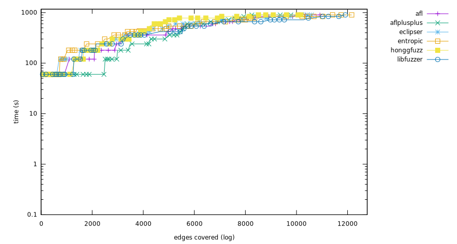 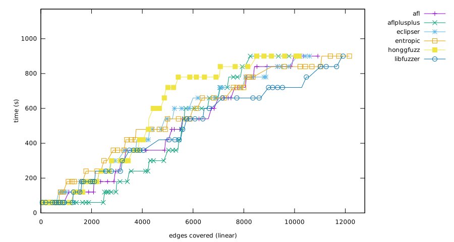
Mann-Whitney U test

openthread-2019-12-23
Ranking
- entropic, (5,106 edges covered), success rate: 63.46%(33/52 pairs)
- aflplusplus, (5,034 edges covered), success rate: 57.69%(30/52 pairs)
- eclipser, (4,883 edges covered), success rate: 51.92%(27/52 pairs)
- libfuzzer, (4,838 edges covered), success rate: 67.31%(35/52 pairs)
- honggfuzz, (4,695 edges covered), success rate: 42.31%(22/52 pairs)
- afl, (4,656 edges covered), success rate: 51.92%(27/52 pairs)

Mann-Whitney U test

php_php-fuzz-parser
Ranking
- entropic, (29,033 edges covered), success rate: 18.52%(10/54 pairs)
- honggfuzz, (28,722 edges covered), success rate: 18.52%(10/54 pairs)
- afl, (28,449 edges covered), success rate: 22.22%(12/54 pairs)
- aflplusplus, (28,325 edges covered), success rate: 16.67%(9/54 pairs)
- eclipser, (27,872 edges covered), success rate: 11.11%(6/54 pairs)
- libfuzzer, (27,710 edges covered), success rate: 14.81%(8/54 pairs)
 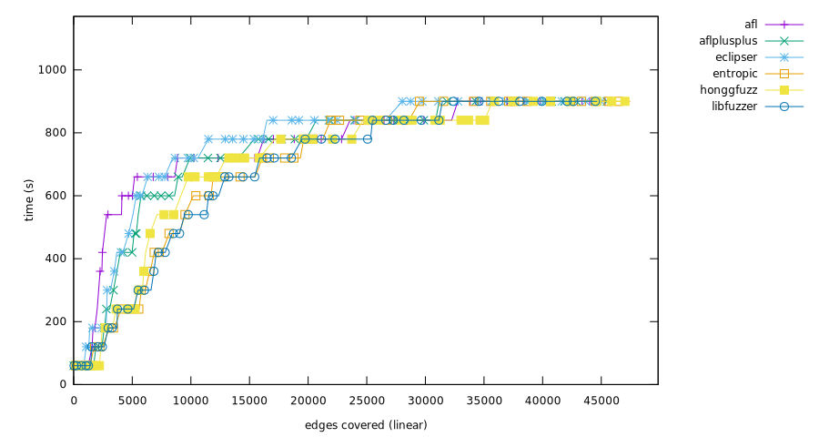
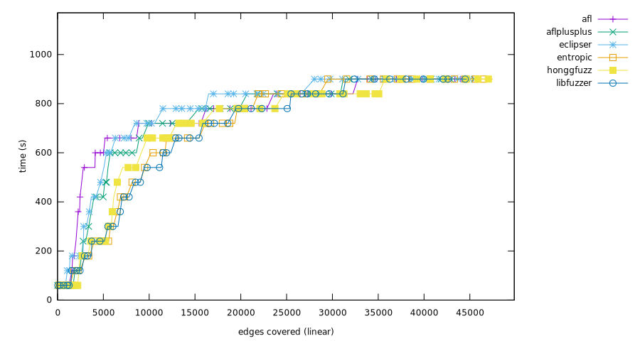
Mann-Whitney U test

proj4-2017-08-14
Ranking
- entropic, (3,934 edges covered), success rate: 54.55%(30/55 pairs)
- libfuzzer, (3,933 edges covered), success rate: 54.55%(30/55 pairs)
- honggfuzz, (3,904 edges covered), success rate: 52.73%(29/55 pairs)
- eclipser, (3,723 edges covered), success rate: 30.91%(17/55 pairs)
- aflplusplus, (3,708 edges covered), success rate: 41.82%(23/55 pairs)
- afl, (3,692 edges covered), success rate: 25.45%(14/55 pairs)
 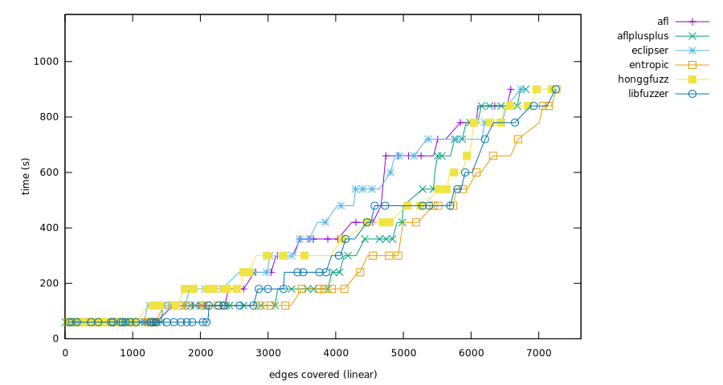
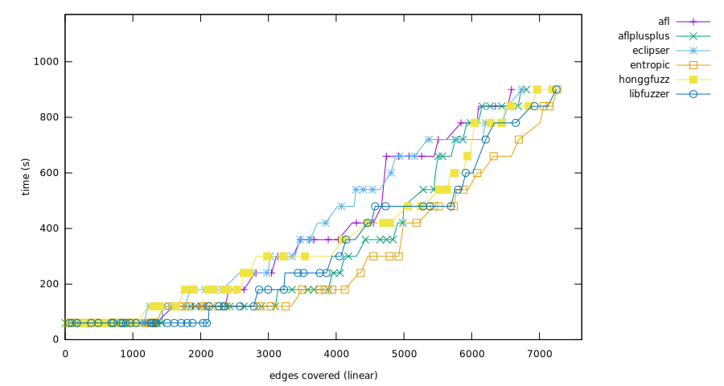
Mann-Whitney U test
re2-2014-12-09
Ranking
- aflplusplus, (14,822 edges covered), success rate: 92.16%(47/51 pairs)
- eclipser, (14,822 edges covered), success rate: 84.31%(43/51 pairs)
- libfuzzer, (14,818 edges covered), success rate: 84.31%(43/51 pairs)
- honggfuzz, (14,799 edges covered), success rate: 80.39%(41/51 pairs)
- entropic, (14,769 edges covered), success rate: 86.27%(44/51 pairs)
- afl, (14,691 edges covered), success rate: 84.31%(43/51 pairs)
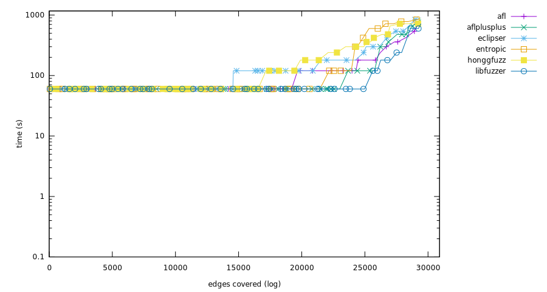 
Mann-Whitney U test

sqlite3_ossfuzz
Ranking
- afl, (58,588 edges covered), success rate: 36.17%(17/47 pairs)
- honggfuzz, (58,032 edges covered), success rate: 31.91%(15/47 pairs)
- eclipser, (57,915 edges covered), success rate: 36.17%(17/47 pairs)
- entropic, (57,209 edges covered), success rate: 36.17%(17/47 pairs)
- libfuzzer, (56,185 edges covered), success rate: 34.04%(16/47 pairs)
- aflplusplus, (54,943 edges covered), success rate: 34.04%(16/47 pairs)
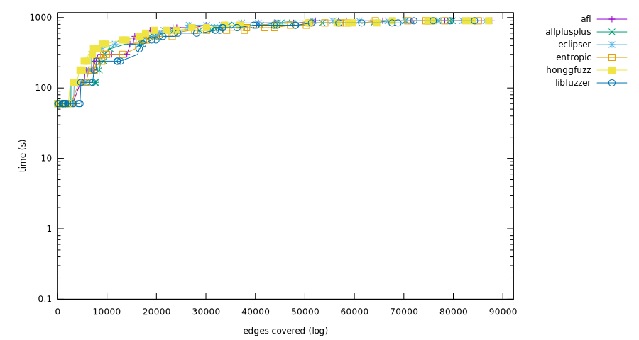
Mann-Whitney U test
systemd_fuzz-link-parser
Ranking
- honggfuzz, (789 edges covered), success rate: 36.00%(18/50 pairs)
- entropic, (664 edges covered), success rate: 34.00%(17/50 pairs)
- libfuzzer, (660 edges covered), success rate: 34.00%(17/50 pairs)
- eclipser, (644 edges covered), success rate: 34.00%(17/50 pairs)
- afl, (598 edges covered), success rate: 36.00%(18/50 pairs)
- aflplusplus, (585 edges covered), success rate: 26.00%(13/50 pairs)


Mann-Whitney U test
vorbis-2017-12-11
Ranking
- aflplusplus, (3,114 edges covered), success rate: 55.10%(27/49 pairs)
- honggfuzz, (3,006 edges covered), success rate: 53.06%(26/49 pairs)
- afl, (1,757 edges covered), success rate: 53.06%(26/49 pairs)
- eclipser, (1,714 edges covered), success rate: 55.10%(27/49 pairs)
- entropic, (1,676 edges covered), success rate: 51.02%(25/49 pairs)
- libfuzzer, (1,558 edges covered), success rate: 48.98%(24/49 pairs)
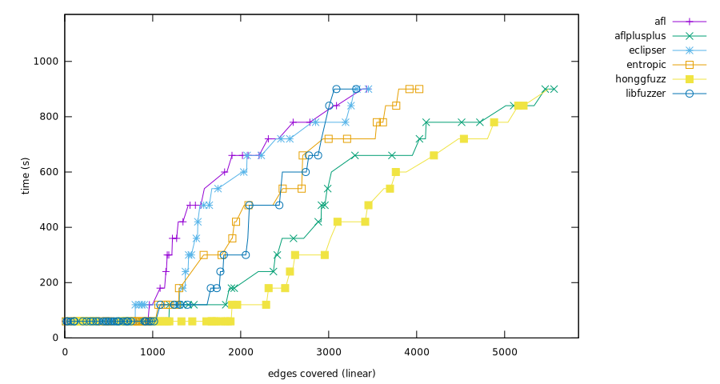
Mann-Whitney U test